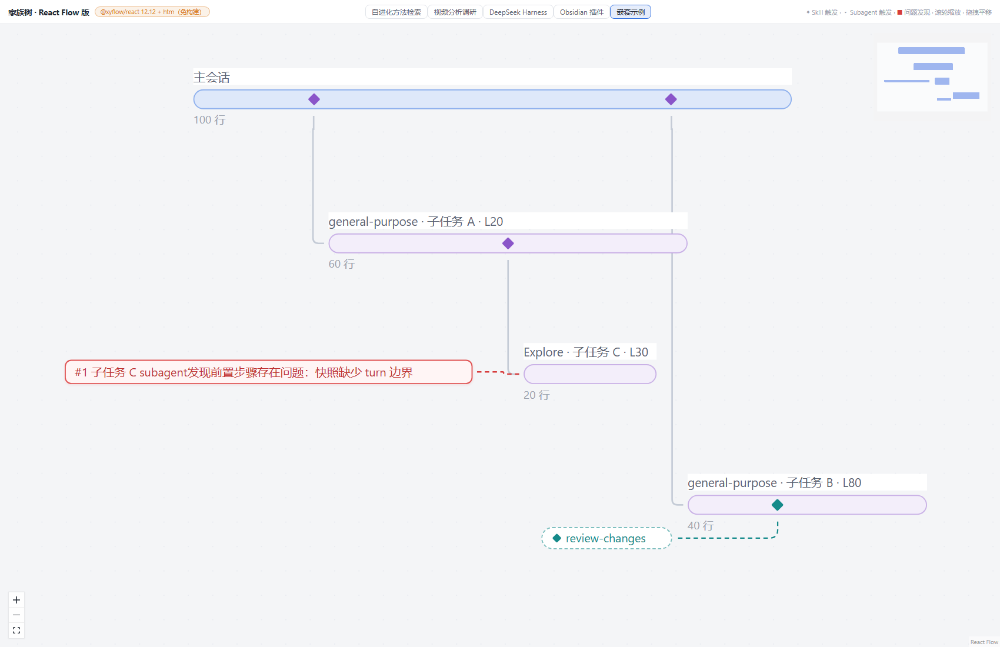
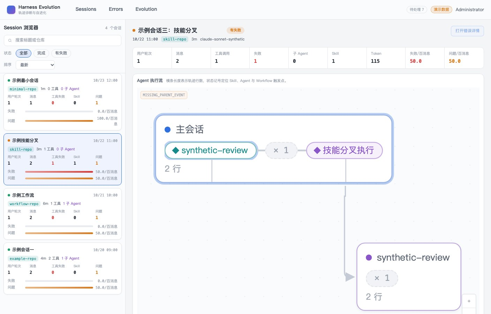
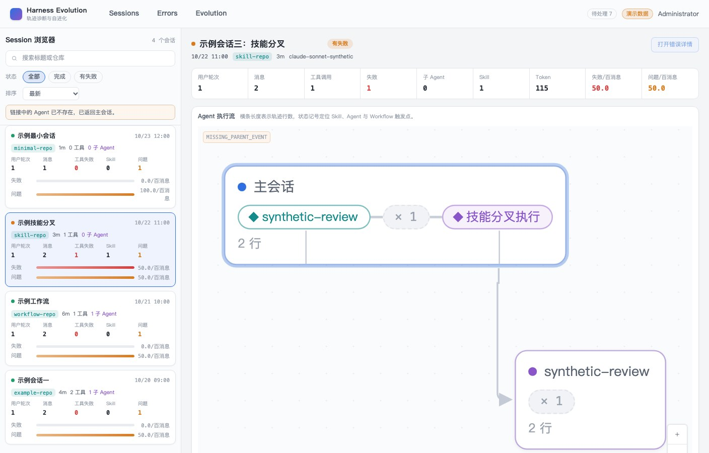
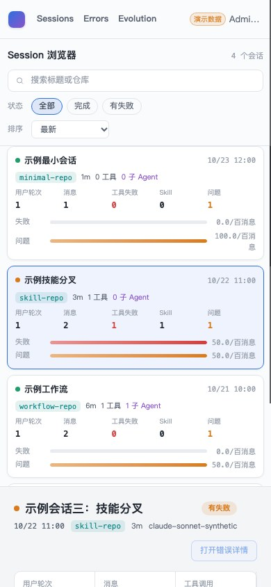
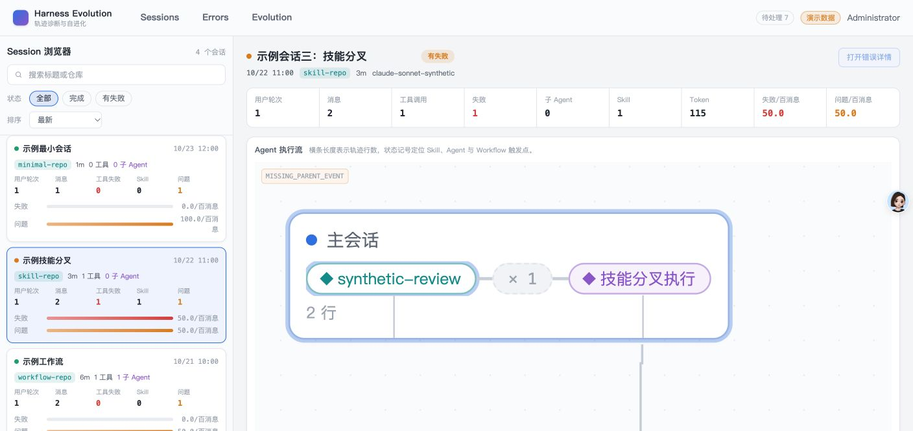
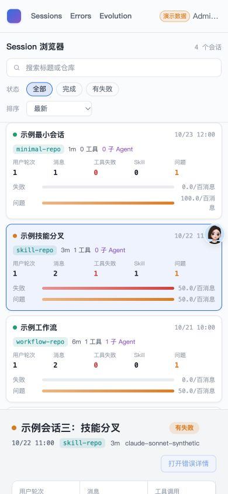

- Issue
- #44 · m3-04-session-deep-links
- PR
- #108
- Commit
- 7dc031c
- Runtime
- FastAPI + Vite + SQLite + Chrome Extension + CDP
- Prototype
- plans/14-15-ui-prototype/harness-evolution.html
Harness Evolution · PR #108
M3-04 Session 深链集成冒烟报告
在真实 FastAPI、SQLite、Vite 和 Chrome 上验证 Session、Agent 与 evidence 深链恢复。有效深链、原生 Computer Use、1408 桌面、390px 移动端、非法 Agent、History、新标签页与折叠目标展开均通过，未发现未解决产品缺陷。
15冒烟场景
15通过
1active evidence
0控制台违规
Environment and Artifact
2026-10-26 · macOS · Chrome/CDP · localhostScenario Matrix
15 pass| # | 场景 | 结果 | 观测 | 证据 |
|---|---|---|---|---|
| 01 | 有效 Agent/evidence 深链 | PASS | 直开 URL 后选中 Agent 恢复，evidence 高亮数量为 1。 | screenshots/01-deep-link-desktop.jpg screenshots/04-native-cua-deep-link.jpg runtime-evidence.json |
| 02 | Agent 当前节点唯一高亮 | PASS | evidence 只出现在 active Agent；相同下标不会串到兄弟节点。 | runtime-evidence.json 单元回归 |
| 03 | 点击节点写 URL | PASS | 点击 Agent 后写入 canonical agent query 并清除旧 evidence。 | Chrome history.back 回归 m3-session-browser E2E |
| 04 | 刷新恢复 | PASS | 页面 reload 后 Session、Agent 与 evidence 均保持。 | automated E2E deep link refresh |
| 05 | 前进后退恢复 | PASS | 切换 Agent 后 history.back 恢复原深链与高亮。 | runtime-evidence.json historyRestored=true |
| 06 | 新标签页复制恢复 | PASS | 复制深链到新 Chrome target 后同一 Agent/evidence 恢复。 | runtime-evidence.json copied.agentId |
| 07 | 非法 Agent | PASS | 清 Agent/evidence，显示 inline 提示，保留同一 Session 和四张卡片。 | screenshots/02-invalid-agent.jpg |
| 08 | evidence 越界 | PASS | 保留 Agent、清 evidence，并定位到 Agent。 | Index component tests |
| 09 | 折叠目标自动展开 | PASS | child-9 深链展开祖先 collapse，目标节点出现并可见。 | real Chrome folded E2E 1/1 child-9 visible |
| 10 | 非法 Session 不误回退 | PASS | 非法 session 参数不请求错误资源，也不自动选择首项并继承旧 Agent。 | deepLink parser tests Session isolation tests |
| 11 | 390px 深链恢复 | PASS | selected Agent 与唯一 evidence 可见，页面无横向溢出。 | screenshots/03-deep-link-390.jpg scrollWidth=390 |
| 12 | 亮色原型基线 | PASS | body、topbar、card 分别为 rgb(244,245,247)、rgb(250,251,252)、白色。 | screenshots/00-prototype-reference.png computed styles |
| 13 | m4 边界与控制台 | PASS | 未提前实现错误页或伪造跨 Session 409；正常路径控制台违规为 0。 | runtime-evidence.json browser violations=[] |
| 14 | 原生 Chrome Computer Use | PASS | 原生 Chrome 完成登录、Session/Agent 选择与有效 evidence URL 恢复，未使用 headless 替代。 | screenshots/04-native-cua-deep-link.jpg ARI 语义按钮与 alert |
| 15 | 原生 Chrome 390px | PASS | 原生 viewport 切到 390×844 后 selected Agent 与唯一 evidence 可见，scrollWidth=clientWidth=390，warning/error=0。 | screenshots/05-native-cua-390.jpg native viewport evaluate |
Issues and Observations
No defects foundNo defects were found.
Evidence
6 screenshots





Automated Coverage Assessment
5 areas reviewed| 区域 | 覆盖 | 结论 | 建议 |
|---|---|---|---|
| URL 解析 | 单元 + 真实页面 | 重复值、控制字符、长度、二次编码、Agent/evidence 关系均有回归。 | m4 复用 case/tab parser；归属判断必须等真实 bad-case API。 |
| History / 新窗口 | 真实 Chrome | 刷新、back、forward、复制到新 target 均恢复同一状态。 | 保留真实浏览器回归，勿仅用组件测试替代。 |
| 折叠 Agent | 真实 Chrome + 折叠 fixture | 目标 child-9 的祖先分支自动展开且节点可见。 | 后续增加折叠分支问题锚点时应复用同一定位路径。 |
| m4 bad-case | 仅 parser/resolver seam | 本 issue 不伪造错误页或跨 Session 409。 | m4-02 接入真实会话归属字段后再交付 mismatch 页面错误。 |
| Computer Use | 原生 Chrome 扩展 + 真实 CDP | 原生 Chrome 验证有效深链和 390px；CDP 补充 History、新窗口和折叠路径。 | 后续深链变更继续保留原生界面与 CDP 双重证据。 |
Conclusion
通过Session、Agent 与 evidence 深链在桌面、移动端、History、新窗口和折叠分支中均可恢复，未引入原型视觉或 m4 边界回归。
- 桌面与移动端均无双深链高亮或页面溢出。
- 非法 Agent 使用非破坏性 inline 提示，不切换 Session。
- 真实 Chrome E2E 与自动化解析测试共同覆盖关键状态。
- 原生 Chrome Computer Use 与 headless/CDP 证据均通过，原生视口 warning/error 为 0。
证据源：真实 FastAPI/SQLite/Vite、headless Chrome/CDP、runtime-evidence.json 与 E2E 输出。